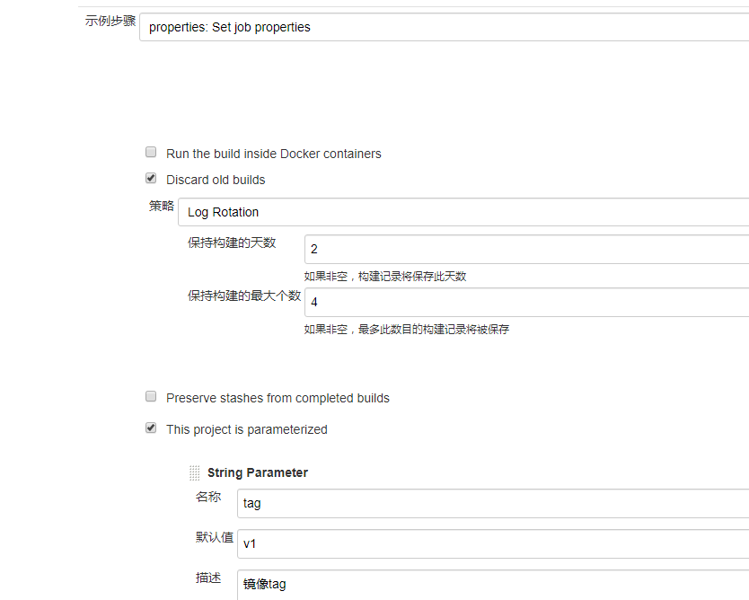
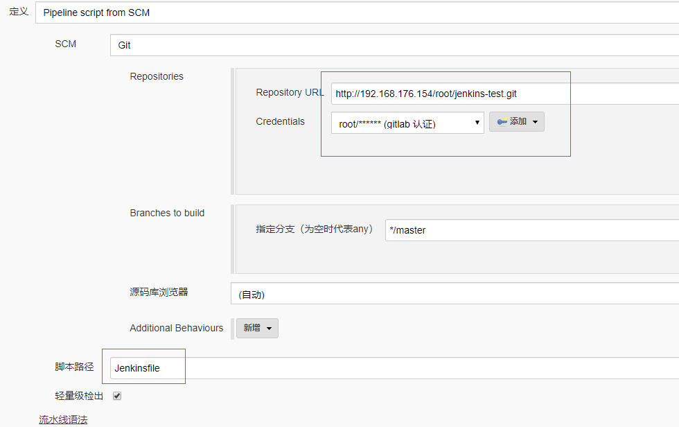
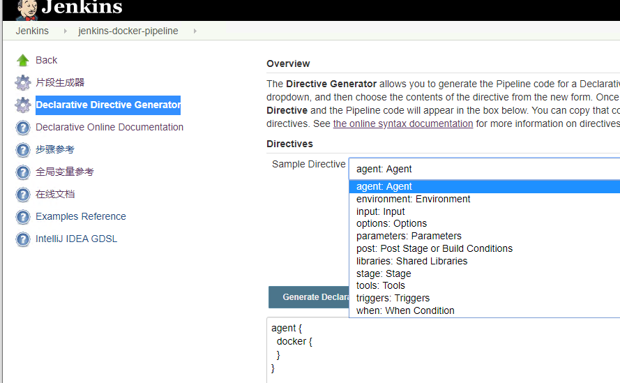
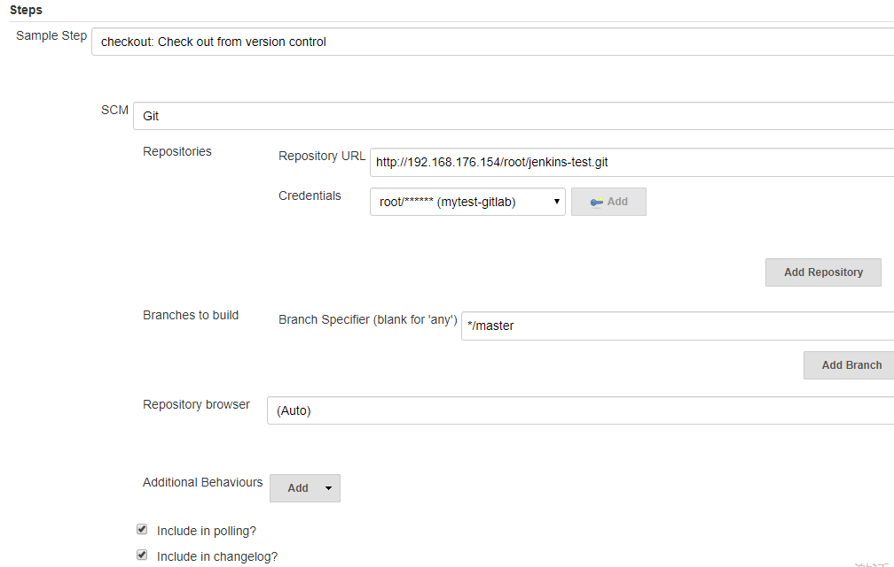
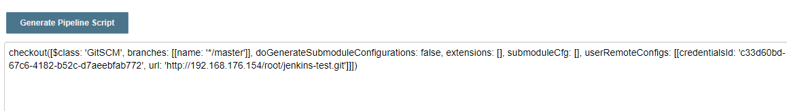

- 01.Jenkins的安装配置与日常维护.md.html
- 02.Jenkins强大的插件功能.md.html
- 03.Devops工具链.md.html
- 04.初探Jenkins CD实践.md.html
- 05.Jenkins常用项目配置参数.md.html
- 06.Jenkins部署之Docker要点.md.html
- 07.Jenkins集成之Ansible要点.md.html
- 08.Jenkins集成Ansible持续部署服务到Docker容器.md.html
- 09.实现自动化引擎之Jenkins Pipeline声明式语法.md.html
- 10.实现自动化引擎之Jenkins Pipeline脚本式语法.md.html
- 11.Pipeline语法进行持续交付与基础实践.md.html
- 12.Jenkins Docker Pipeline插件动态生成Slave节点语法剖析.md.html
- 13.使用 Docker Pipeline插件动态生成Jenkins Slave 实践.md.html
- 14.搞定不同环境下的Jenkins与Kubernetes集群连接配置.md.html
- 15.Jenkins Kubernetes Plugin介绍与语法详解.md.html
- 16.使用Kubernetes编排Jenkins Slave节点持续交付项目.md.html
- 17.使用Kubernetes插件持续部署服务到Kubernetes集群.md.html
- 18.Ansible Plugin插件语法详解与持续部署服务到kubernetes集群.md.html
- 捐赠
10.实现自动化引擎之Jenkins Pipeline脚本式语法
前面章节介绍了pipeline的声明式语法， 本节通过对比来介绍一下脚本式语法的使用。虽然两种类型的语法都是建立在底层流水线的子系统上的语法，但是脚本式流水线在使用一些常用插件的时候显得更加容易，脚本式流水线只有stage指令，在声明式流水线中的stages和steps关键字在脚本式流水线中是不能使用的。下面针对在声明式流水线中介绍到的部分关键字介绍一下在脚本式流水线中的实现方法。
node
声明式流水线中，使用agent关键字指定执行Jenkins流水线的代理，在脚本式流水线中通过node关键字来指定代理节点。
基本示例如下
node('jenkins-slave1') {
stage('test1') {
sh 'hostname'
}
}
其中jenkins-slave为jenkins代理节点的名称或者标签名称，如果”()“为空，则默认会从所有的节点中选择一个slave节点
除了可以为所有stage提供一个全局的代理节点以外，也可以为不同的stage提供不同的代理节点。
如下示例
node() {
stage('test-node'){
node('jenkins-slave1'){
stage('test1'){
sh 'hostname'
}
}
}
stage('test-node2'){
node('jenkins-slave169'){
stage('test2'){
sh 'hostname'
}
}
}
}
该示例为不同的stage步骤使用了不同的slave节点
使用node也可以用容器作为agent，比如
node() {
docker.image('maven').inside {
stage('te') {
sh "hostname"
}
}
docker.image('nginx').inside {
stage('te1') {
sh "hostname"
}
}
}
该配置针对不同的流水线stage使用不同的镜像启动容器提供脚本执行的环境，docker.image().inside()是docker pipeline插件里的一个指定镜像并启动容器的方法，在以后的章节会介绍，这里只需要知道可以这么操作即可
基于上面示例的思考，是不是可以在不同的节点上分别启动容器来进行不同的工作呢？答案是可以的，如下示例
node() {
stage('test1'){
node('slave1'){
docker.image('maven').inside {
stage('te') {
sh "hostname"
}
}
}
}
stage('test2'){
node('slave2'){
docker.image('nginx').inside {
stage('te1') {
sh "hostname"
}
}
}
}
}
该示例会在两个slave节点上分别启动容器作为流水线的执行环境。既然使用脚本式语法能实现在不同的slave节点启动不同的容器，在声明式语法中也能做到，在以后的章节中会有说明
tool
声明式流水线中使用tools定义在jenkins系统中设置的工具的环境变量，在脚本式流水线中使用def 和tool关键字来使用这些工具，例如
node{
def maven = tool name: 'maven-3.5.4'
env.PATH = "${maven}/bin:${env.PATH}"
stage('test'){
sh 'mvn --version'
}
}
该指令的语法片段也可以通过片段生成器生成。
withEnv
在声明式pipeline中通过environment来定义流水线中用到的环境变量，而在脚本式pipeline中使用withEnv来定义全局或者局部环境变量。
比如定义maven的环境变量
node() {
withEnv(["PATH+MAVEN=${tool 'maven-3.5.4'}/bin"]) {
sh 'mvn --version'
}
}
也可以写成这样
def maven = 'maven-3.5.4'
withEnv(["PATH+MAVEN=${tool maven}/bin"]) {
sh 'mvn --version'
}
也可以直接指定实际的值
withEnv(['MYTOOL_HOME=/usr/local/']) {
sh '$MYTOOL_HOME/bin/start'
}
parallel(并行)
parallel除了可以使用声明式语法定义外，也可以使用脚本式语法定义。
下面的例子可以放到脚本式语法中执行
node {
stage('Test') {
parallel slave1: {
node('jenkins-slave1') {
try {
sh 'hostname'
}
finally {
echo "test"
}
}
},
slave169: {
node('jenkins-slave169') {
sh 'hostname'
}
}
}
}
同时在两个节点执行shell命令
properties
声明式脚本通过parameters来定义流水线中使用到的参数，在脚本式语法中则需要通过properties关键字来定义在stage中使用的参数，可以通过片段生成器生（参考下面）成相应的语法片段。
如下示例- 
生成的语法片段如下
properties([
buildDiscarder(
logRotator(artifactDaysToKeepStr: '',
artifactNumToKeepStr: '',
daysToKeepStr: '2',
numToKeepStr: '4')
),
parameters([string(defaultValue: 'v1',
description: '镜像tag',
name: 'tag',
trim: true)
])
])
示例如下
properties([
buildDiscarder(
logRotator(artifactDaysToKeepStr: '',
artifactNumToKeepStr: '',
daysToKeepStr: '2',
numToKeepStr: '4')
),
parameters([
string(
defaultValue: 'v1',
description: '镜像tag',
name: 'tag',
trim: true
)
])
])
node{
stage('test1'){
echo "${params.tag}"
}
}
这里需要说明的是，properties语法片段既可以放到node{}里，也可以放到node{}上面
异常处理
在使用jenkins的时候难免遇到job执行失败的情况。声明式语法中可以通过post关键字对故障进行处理，而在脚本式流水线中则需要使用 try/catch/finally块来处理故障。当step失败 ，无论什么原因，它们都会抛出一个异常。
如下示例
node {
stage('Example') {
try {
sh 'exit 1'
currentBuild.result = 'SUCCESS'
}
catch (exc) {
currentBuild.result = 'FAILURE'
throw exc
}finally{
if(currentBuild.currentResult == "ABORTED" || currentBuild.currentResult == "FAILURE" || currentBuild.currentResult == "UNSTABLE"') {
echo "---currentBuild.currentResult
result is:${currentBuild.currentResult
}"
}
else {
echo "---currentBuild.currentResult
result is:${currentBuild.currentResult
}"
}
}
}
}
需要注意的是，try语句后面一定要有catch或者finally语句，catch与finally语句可以同时存在，也可以只存在一个。
Jenkinsfile
通过学习pipeline的两种语法，对于如何编写脚本式和声明式pipeline脚本应该有了基本的认识，实际工作中使用的jenkinsfile大多数是用声明式脚本编写的（当然脚本式也能用)，至于在什么情况下使用哪种类型的语法，取决于个人对两种语法的熟悉程度。有些情况下，比如在后面章节要用到的docker插件，kubernetes插件，使用脚本式语法可以很方便的与这些插件集成，而如果使用声明式语法就会复杂一些，所以在准备使用pipeline之前有必要先做一下调研。
jenkinsfile脚本文件通常用于放到源码仓库中，在配置jenkins流水线项目时通过checkout script from SCM的方式拉取jenkinsfile和所需的文件，拉取下来以后会自动进行流水线操作。
比如在定义流水线脚本使用方式时使用Pipeline Script的方式配置
node {
checkout scm
}
说明
checkout scm这里应该为实际的拉取代码的指令，用于从代码仓库拉取代码。比如git clone等。- 此时放到Jenkinsfile中的流水线脚本就不需要使用
node{}块包含了
也可以通过Pipeline script from SCM的方式配置，如下所示-

需要注意的是，脚本路径指定的文件名称为从git仓库获取的根目录下的文件名称。文件拉取到本地后就会自动执行流水线操作。
了解了Jenkinsfile文件如何使用后，下面介绍一下针对两种pipeline语法都能使用的一些指令和关键字。
变量
pipeline脚本支持使用变量。在pipeline中的变量分为多种形式，可以自定义变量，可以使用jenkins的环境变量，也可以将通过命令获取的结果动态设置为变量等。下面对这些变量一一进行介绍
自定义变量
Jenkins 使用与 Groovy 相同的规则进行变量赋值。Groovy 支持使用单引号或双引号声明一个字符串，例如：
def singlyQuoted = 'Hello'
def doublyQuoted = "World"
对于变量的引用，可以使用单引号和双引号。如果没有特殊字符，用单引号和双引号是一样的；如果要执行多行命令，用三个单引号或三个双引号。如果有特殊字符需要解释，用双引号，需要转义的情况，用\转义符。
在单引号之间的所有特殊字符都失去了特殊含义；而在双引号之间的绝大多数特殊字符都失去了特殊含义，除了以下特例：
$美元号用来提取变量的值- ` 反冒号用于执行命令
\反斜杠用来转义字符
比如：
def username = 'Jenkins'
echo 'Hello Mr. ${username}'
echo "I said, Hello Mr. ${username}"
其结果是：
Hello Mr. ${username}
I said, Hello Mr. Jenkins
执行命令示例如下：
sh '''
whoami
pwd
ls -ltra
'''
结果
+ whoami
root
+ pwd
/var/lib/jenkins/workspace/test-mytest
+ ls -ltra
total 4
drwxr-xr-x 2 root root 6 Mar 16 17:02 .
drwxr-xr-x 8 root root 4096 Mar 16 17:02 ..
而对于定义多个变量如果每个变量都都使用def指令定义，那酒显得有些重复造轮子了。groovy官方也给出了解决办法，对于上面的示例，可以写成这样：
def cc=[username='jenkins',version="v2.19.0"]
引用时也简单
echo "$cc.usernmae $cc.version"
如果要在脚本式语法中使用通过def命令定义的变量，需要使用script{}块将变量定义的步骤包含起来。
环境变量
在 Jenkins 流水线中，可以定义整个流水线使用的环境变量，也可以使用jenkins自带的环境变量。
对于如何自定义环境变量，取决于使用的是声明式还是脚本式流水线语法，它们设置环境变量的方法不同。关于在声明式和脚本式语法中使用环境变量的方法在前面已经介绍过，这里不再多说，下面看一下使用jenkins内置的环境变量。
Jenkins 流水线通过全局变量 env 提供环境变量，它在 Jenkinsfile 文件的任何地方都可以使用。Jenkins 流水线中可访问的完整的环境变量列表记录在 ${YOUR_JENKINS_URL}/pipeline-syntax/globals#env
比如:
BUILD_ID- 当前构建的 ID，与早期jenkins版本的 BUILD_NUMBER 是完全相同的。
BUILD_NUMBER- 当前构建号，比如 “153”。
BUILD_TAG- 字符串
jenkins-${JOB_NAME}-${BUILD_NUMBER}。可以放到源代码、jar 等文件中便于识别。BUILD_URL- 可以定位此次构建结果的 URL（比如 http://buildserver/jenkins/job/MyJobName/17/ ）
EXECUTOR_NUMBER- 用于识别执行当前构建的执行者的唯一编号（在同一台机器的所有执行者中）。这个就是你在“构建执行状态”中看到的编号，只不过编号从 0 开始，而不是 1。
JAVA_HOME- 如果你的任务配置了特定的 JDK工具，那么这个变量就被设置为此 JDK 的 JAVA_HOME。当设置了此变量时，PATH 也将包括 JAVA_HOME 的 bin 子目录。
JENKINS_URL- Jenkins 服务器的完整 URL，比如 https://example.com:port/jenkins/ （注意：只有在“系统设置”中设置了 Jenkins URL 才可用）。
JOB_NAME- 本次构建的项目名称
NODE_NAME- 运行本次构建的节点名称。对于 master 节点则为 “master”。
WORKSPACE- workspace 的绝对路径。也是job的路径
……
更多变量内容参考pipeline-sytanx即可
示例如下
pipeline {
agent any
stages {
stage('Example') {
steps {
echo "Running ${env.BUILD_ID} on ${env.JENKINS_URL}"
}
}
}
}
动态设置变量
环境变量可以在运行时设置，可以通过shell命令（linux sh）、Windows 批处理脚本（bat）和 Powershell 脚本（powershell）获取变量的值并提供给下面的各stage阶段使用。各种脚本都可以返回 returnStatus 或 returnStdout。
下面是一个使用 sh（shell）的声明式脚本的例子，既有 returnStatus 也有 returnStdout：
pipeline {
agent any
environment {
// 使用 returnStdout
CC = """
${sh(
returnStdout: true,
script: 'echo "clang"'
)}
"""
// 使用 returnStatus
EXIT_STATUS = """
${sh(
returnStatus: true,
script: 'exit 1'
)}
"""
}
stages {
stage('Example') {
environment {
DEBUG_FLAGS = '-g'
}
steps {
sh 'printenv'
}
}
}
}
说明：
- 使用
returnStdout时，返回的字符串末尾会追加一个空格。可以使用.trim()将其移除。 - 该指令可以通过片段生成器生成语法片段
相对于脚本式语法就简单的多
node {
stage('s'){
script {
cc=sh(returnStdout: true, script: 'hostname').trim()
}
echo "$cc"
}
}
条件判断
Jenkinsfile 从顶部开始向下串行执行，执行过程中难免遇到使用条件判断的情况，声明式语法中可以通过when关键字做一些基础的判断，但是在脚本式语法中无法使用when关键字。而使用if/else语句在两种pipeline语法中都可以使用，并且提高条件判断的灵活性。
在pipeline中使用的if/else语句同样遵循Groovy语法，如下示例
node {
stage('Example') {
if (env.BRANCH_NAME == 'master') {
echo 'I only execute on the master branch'
} else {
echo 'I execute elsewhere'
}
}
}
或者如下示例
script{
test_result=sh(script:"ls /tmp/uu.txt",returnStatus:true)
echo test_result
if(test_result == 0){
echo "file is exist"
}else if(test_resultt == 2){
echo "file is not exist"
}else{
error("command is error,please check")
}
}
}
fileExists
该关键字用来判断当前工作空间下指定的文件是否存在，文件的路径设定时使用基于当前工作空间的相对路径，返回的结果为布尔值。该关键字的使用语法可以通过片段生成器来生成。
如下示例
script {
json_file = "${env.WORKSPACE}/testdata/test_json.json"
if(fileExists(json_file) == true) {
echo("json file is exists")
}else {
error("here haven't find json file")
}
}
说明：
- 该示例用于判断
json_file变量指定的文件是否存在 - error指令用于定义并返回自定义的错误信息
dir
dir()方法用于改变当前的工作目录，在dir语句块填写要进入的目录路径即可。
示例如下
stages{
stage("dir") {
steps{
echo env.WORKSPACE
dir("${env.WORKSPACE}/fw-base-nop"){
sh "pwd"
}
}
}
}
deletedir
deleteDir()方法默认递归删除WORKSPACE下的文件和文件夹，没有参数，通常它与dir步骤一起使用，用于删除指定目录下的内容。
示例如下
stage("deleteDir") {
steps{
script{
sh("ls -al ${env.WORKSPACE}")
deleteDir() // clean up current work directory
sh("ls -al ${env.WORKSPACE}")
}
}
}
或者删除指定目录
node {
stage('s'){
dir('/base'){
deleteDir()
}
}
}
script
script 步骤需要script-pipeline块并在流水线中执行。 对于大多数用例来说，声明式流水线中的script步骤是不必要的，该关键字大多数情况下用来执行命令。
示例如下
pipeline {
agent any
stages {
stage('Example') {
steps {
echo 'Hello World'
script {
def browsers = ['chrome', 'firefox']
for (int i = 0; i < browsers.size(); ++i) {
echo "Testing the ${browsers[i]} browser"
}
}
}
}
}
}
其中，通过def定义的变量可以在下面的stage的中被引用
stash/unstash
stash用于将文件保存起来，以便同一次构建的其他stage或step使用。 如果整个流水线在同一台机器上执行，那stash是多余的。stash一般用于跨Jenkins node使用， stash步骤会将文件存储在tar文件中，对于大文件的stash操作将会消耗Jenkins master的计算资源。Jenkins官方文档推荐，当文件大小为5∼100MB时，应该考虑使用其他替代方案。
stash 指令的参数如下：
- name：字符串类型，保存文件的集合的唯一标识
- allowEmpty：布尔类型，允许stash内容为空
- excludes：字符串类型，排除文件，如果排除多个使用「逗号」分隔
- includes：字符串类型，stash文件，留空表示全部
- useDefaultExcludes：布尔类型，true：使用Ant风格路径默认排除文件 Ant风格路径表达式
除了name参数，其他参数都是可选的。excludes和includes使用的是Ant风格路径表达式。
与stash对应的是unstash。该指令用于取出之前stash的文件。-
unstash步骤只有一个name参数，即stash时的唯一标识。通常情况下，stash与unstash步骤同时使用。示例如下
pipeline {
agent none
stages {
stage('stash') {
agent { label "master" }
steps {
dir('target') {
stash(name: "abc", include: "xx.jar")
}
}
}
stage("unstash") {
agent { label "jenkins-slave1" }
steps {
script {
unstash("abc")
cp xx.jar /data
...
}
}
}
}
}
unstash根据stash指定的name的值获取文件，等流水线执行完毕后，文件会删除
archiveArtifacts
jenkins流水线的archiveArtifacts指令也是用来保存文档文件，与stash不同的是，该指令会将文件保存到本地，流水线执行完成后不会被销毁。保存的文件会放到到 Jenkins 的 jobs/JOB_NAME/builds/BUILD_NO目录下
示例如下
pipeline {
agent any
stages {
stage('Archive') {
steps {
archiveArtifacts artifacts: '**/target/*.jar', onlyIfSuccessful: true
}
}
}
}
archiveArtifacts指令包含多个参数，其中artifacts参数为必须参数，onlyIfSuccessful参数表示只有成功时保存文件。其他参数使用可以参考官方文档
片段生成器
jenkins内置的Snippet Generator工具（片段生成器）用于将插件或者关键字的使用语法动态的生成steps语法片段，添加到流水线中。片段生成器界面可以从pipeline项目中最底部的pipeline syntax超链接中进入，也可以直接通过${YOUR_JENKINS_URL}/pipeline-syntax访问。
Jenkins对于片段生成器分成了两种类别，一种是基于pipeline声明式语法的片段生成器（Declarative Directive Generator菜单），另一种是基于jenkins内置插件以及脚本式语法使用（片段生成器菜单）的片段生成器。下面分别对这两种生成器进行介绍
基于声明式语法的片段生成器，用于在不知道关键字语法的情况下生成语法片段。同样是访问上面的连接，点击Declarative Directive Generator菜单，如下所示-

可以看到，在下拉框中显示了这些指令的相关语法，选中任意指令配置好后点击下面的Generate Declarative Directive即可生成相应的语法片段
而对于声明式脚本以及内置插件使用的片段生成器，直接点击”片段生成器“菜单即可，点击”Sample Setp“会列出所有支持的插件列表，选中一个，比如下图所示：

根据需要配置好必须项，点击下方的Generate Pipeline Script就会生成相应的代码片段

然后就可以复制粘贴放到pipeline项目中的脚本中去了。
有关Jenkins脚本式语法的内容就介绍到这里，在下一节中将使用实践案例在对本节以及上节学习的内容进行实践，以加深理解
© 2019 - 2023 Liangliang Lee. Powered by gin and hexo-theme-book.